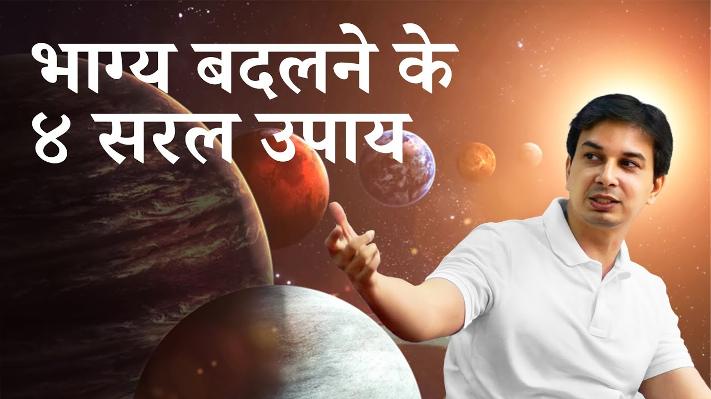

सब कहते हैं, पर योजना किसके पास है?
"भारत का भविष्य अच्छा होना चाहिए।" यह बात आपने कितनी बार सुनी है? युगों से सुनते आ रहे हैं, और अब तो यह बात भी पुरानी हो गई है।
हर कोई यही कह रहा है, हर कोई गुरु बन कर बता रहा है। पर एक प्रश्न रह जाता है: योजना किसके पास है?
आचार्य जी बताते हैं कि भाग्य अगर बदलना है, तो चार चीज़ों की ज़रूरत होती है। चाहे बात एक व्यक्ति की हो या पूरे देश की, ये चार सूत्र वही रहते हैं।
तो भाग्य कैसे बदलें? संक्षेप में, आचार्य जी के अनुसार चार चीज़ें चाहिए: स्पष्ट योजना और संकल्प; प्रारब्ध का साथ, जो पिछले कर्मों से बनता है; अपनी योजना और अपने भाग्य पर आत्मविश्वास; और सबसे ऊपर, गुरु कृपा। भाग्य बदला जा सकता है, पर योजना को प्रारब्ध का साथ मिल जाए, तो राह आसान हो जाती है। आइए, एक-एक कर के इन्हें समझें।
पहला सूत्र: योजना (संकल्प)
सबसे पहले चाहिए योजना। मन में एक अधिष्ठान (आधार) और संकल्प (दृढ़ निश्चय) कि मुझे यह करना है।
चाहे छोटी-सी नौकरी हो, कोई व्यापार हो, या पूरा देश बदलना हो, विश्व गुरु बनना हो, पहला कदम हमेशा एक ही है: कोई योजना हो, कोई पुरुषार्थ (स्वयं का प्रयास) जो मुझे करना है।
क्या आपके जीवन में कोई स्पष्ट योजना है, या केवल इच्छाएँ हैं?
दूसरा सूत्र: क्या भाग्य साथ दे रहा है?
इच्छाएँ तो बहुत सी हो सकती हैं। पुरुषार्थ नए कर्मों की बात करता है। पर प्रश्न यह है कि क्या मेरे पुराने कर्म, पिछले जन्मों के कर्म, मेरे नए कर्मों का साथ देते हैं?
इसे कहते हैं प्रारब्ध (पिछले कर्मों से बना भाग्य, destiny)। क्या मेरा प्रारब्ध भी मेरे संकल्प का साथ देता है?
इसका अर्थ यह नहीं कि भाग्य के आगे आप जा ही नहीं सकते। भाग्य बदला जा सकता है। पर यदि योजना को प्रारब्ध का सहारा मिल जाए, तो राह कितनी आसान हो जाती है!
तीसरा सूत्र: आत्मविश्वास
योजना भी हो और प्रारब्ध भी साथ दे, फिर भी एक तीसरी चीज़ चाहिए: आत्मविश्वास (self-belief)। यह दो तरह का है:
- अपनी योजना में विश्वास
- अपने प्रारब्ध में विश्वास, कि यही मेरा भाग्य है
कोई गुरु बताता है, कोई नाड़ी शास्त्र, कोई जन्मपत्रिका, कोई हस्तरेखा। और अगर आपने कभी कुछ नहीं देखा, तब भी कोई बात नहीं। पर आपके पिछले कर्म तो लागू होंगे ही। नास्तिक भी उसी प्रारब्ध के अनुसार चल रहा है।
बहुत से लोगों में यही कमी होती है। गुरु कह भी दें, तब भी वे सोचते हैं, "अरे, होगा क्या? कैसे होगा?" और फिर, प्रारब्ध में होते हुए भी, उनका काम नहीं होता।
दूसरी ओर, कई लोग बड़े सपने देखते हैं, योजनाएँ बनाते हैं, पर उन पर चल नहीं पाते।
जब कोई आपको बताता है कि आप कुछ कर सकते हैं, तो आपके भीतर पहली आवाज़ "हाँ" की होती है या "कैसे होगा?" की?
चौथा सूत्र: गुरु कृपा
तीन सूत्र हो गए। चौथा सूत्र इन सबके ऊपर आता है: गुरु कृपा।
संक्षेप में, भाग्य बदलने के चार सूत्र:
- १योजना: अपने भविष्य के बारे में स्पष्ट योजना।
- २प्रारब्ध: क्या भाग्य साथ देता है? न दे, तो योजना ऐसी हो कि हम भाग्य से भी आगे जा सकें।
- ३आत्मविश्वास: अपनी योजना और अपने भाग्य पर भरोसा।
- ४कृपा: गुरु का आशीर्वाद।
आखिर प्रारब्ध देखें ही क्यों?
एक स्वाभाविक प्रश्न उठता है: मैं अगस्त्य मुनि की नाड़ी, या अपनी पत्रिका, क्यों देखूँ?
ऋषि-मुनियों की बात थोड़ी देर के लिए छोड़ दीजिए। आज के बड़े लोगों का एक कथन प्रसिद्ध है कि करोड़पतियों को ज्योतिषियों की ज़रूरत नहीं होती, पर अरबपतियों को होती है।
जो मनुष्य जितना ऊँचा जाता है, परमात्मा के जितना निकट जाता है, वह उतना समझता है कि ज्योतिष कितना महत्त्वपूर्ण है।
ज्योतिष का अर्थ यह नहीं कि "मुझे गाड़ी-बंगला कब मिलेगा।" वेदों के छह अंग हैं, जिन्हें वेदांग कहते हैं। इनमें ज्योतिष को वेद की आँख कहा गया है। हमारे ऋषि-मुनियों ने कहा कि इससे पूरा जीवन सरलता से नियोजित किया जा सकता है।
इसीलिए बचपन में ही बालक को गुरुकुल भेजना इतना आवश्यक था। वहाँ पहले से एक मार्गचित्र (roadmap) मिल जाता था कि मेरा प्रारब्ध क्या है। उसके बाद ही निर्णय आता है कि भाग्य को स्वीकार करूँ या बदलूँ।
जो दुःख अभी आया नहीं, उसे आज ही रोको
महर्षि पतंजलि ने योगसूत्र में बिल्कुल स्पष्ट लिखा है:
हेयं दुःखमनागतम्।
"जो दुःख अभी आया नहीं है, वही टालने योग्य है।"
(पतंजलि योगसूत्र २.१६)
- हेयम्: नष्ट करने योग्य, त्यागने योग्य
- दुःखम्: दुःख
- अनागतम्: जो अभी आया नहीं है
अर्थात, जो दुःख अभी आया नहीं है, उसे नष्ट करना है।
आप पूछेंगे, जो आया ही नहीं, उसे कैसे नष्ट करें? गुरुदेव इसे रोज़मर्रा के उदाहरणों से समझाते हैं:
- आज क्रोध आता है, निःस्वार्थ प्रेम नहीं है, रक्तचाप बढ़ रहा है, तो कल हृदयाघात आना लगभग तय है। आज ही नियंत्रण करें, तो बचाव है।
- आज बहुत तीखा, मसालेदार खाते हैं, तो कल मूलाधार चक्र और पेट से जुड़ी कोई न कोई समस्या आनी ही है।
- बहुत अधिक चिकनाई खाते हैं, तो एक दिन मोटापे की समस्या आनी ही है।
कल अगर अच्छे दाँत चाहिए, तो आज साफ़ करने होंगे। यानी जीवन की योजना बनानी पड़ती है। कोई यदि आपको आने वाले समय के लक्षण बता दे, तो वह यही सूत्र दोहरा रहा है। आने वाले दुःख को विधिपूर्वक उपाय से दूर करना, यही आपका कर्तव्य है।
कौन-सा "अनागत दुःख" आप आज अपनी आदतों से अपने लिए तैयार कर रहे हैं?
व्यक्ति से राष्ट्र तक: भारत का भाग्य
यदि एक व्यक्ति को भाग्य बदलने के लिए योजना चाहिए, तो पूरे देश को बदलने के लिए कितनी बड़ी योजना चाहिए? गुरुदेव बताते हैं कि भारत के लिए वह योजना, जिसकी कोई बात नहीं करता था, अंतर का संकल्प है। और चारों सूत्र उस पर कैसे लागू होते हैं:
- योजना: योजना बनाने में कोई कठिनाई नहीं; योजना स्वयं बता देगी।
- प्रारब्ध: यह अंतर की पत्रिका में, गुरुदेव की पत्रिका में आता है, तो भाग्य निश्चित ही साथ दे रहा है।
- आत्मविश्वास: यह तो स्वयं आत्मा की साधना है। सत्य को आज अपनाएँगे, तो आत्मविश्वास होगा ही होगा।
- गुरु कृपा: यह गुरु का ही कार्य है, तो गुरु कृपा अवश्य होगी।
मुख्य बातें
- भाग्य बदलने के चार सूत्र हैं: योजना, प्रारब्ध, आत्मविश्वास और गुरु कृपा।
- प्रारब्ध बदला जा सकता है, पर योजना को उसका साथ मिले तो मार्ग सरल होता है।
- आत्मविश्वास के बिना, प्रारब्ध में होते हुए भी काम नहीं बनता।
- ज्योतिष वेद की आँख है; यह जीवन की योजना का साधन है, गाड़ी-बंगले का नहीं।
- हेयं दुःखमनागतम्: आने वाले दुःख को आज ही, विधिपूर्वक उपाय से रोकना हमारा कर्तव्य है।
- जो सूत्र व्यक्ति पर लागू होते हैं, वही राष्ट्र पर भी लागू होते हैं।

आगे पढ़ें

हम अक्सर सुनते हैं कि "जैसा करोगे, वैसा भरोगे।" पर क्या सच में केवल कर्म ही हमारा भाग्य बनाते हैं? भगवद्गीता इस प्रश्न का एक गहरा और चौंकाने वाला…
क्या आपको भी लगता है कि जीवन में कुछ बड़ा पाने के लिए और ज़ोर लगाना होगा, और दौड़ना होगा, और मांगना होगा? आचार्य उपेंद्र जी इस सोच को एक सरल से…

गीता का एक श्लोक है जो पहली बार सुनने पर चौंका देता है। श्रीकृष्ण अर्जुन से कहते हैं, सब धर्म छोड़कर मेरी शरण में आ जा।